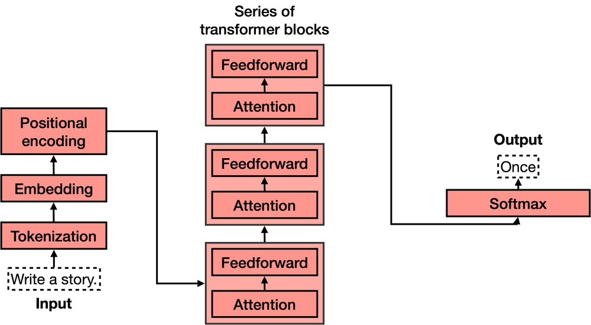

Introduction
Diving deep into the intricacies of large language models (LLMs), one hurdle quickly becomes evident: the context length limitation. While many recognize its implications, the question remains: how can we train models on more extensive context lengths without falling into the predicament of quadratic complexity?
Transformers, especially their self-attention mechanism, have a quadratic computational complexity in relation to the input sequence length. It’s like that one friend who has to say hi to everyone at a party – each token in the sequence has to interact with every other token.
For an input sequence of length (N), there are (N^2) interactions. So, if (N) is the number of guests at the party, imagine the time it’d take if every guest had to greet every other guest! This results in a computational cost proportional to (N^2). This means that as the sequence length (or party size) doubles, the computational cost (or time to greet everyone) quadruples. And while it’s great to be social, this rapid growth in computational demands becomes a major party pooper for very long sequences, posing challenges in tasks where extended context is crucial.
To put things in perspective and provide a clearer understanding, the following chart compares the context lengths of various models. This visualization can help elucidate the inherent limitations and possibilities of different Transformer-based models.
The context length of the base model varies, with Falcon allowing up to 2K tokens and LLAMA2 accommodating up to 4K tokens, but we also have models like MPT trained with Alibi attention that can in theory support up to infinite context lengths.
Which parts of Transformer architecture can we tinker with to extend context length?
The Transformers (not the Autobots, mind you), have 5 main parts:
- Tokenization
- Embedding
- Positional encoding
- Transformer block (several of these)
- Softmax

Typically, to extend the context length in Transformers, we often tweak the positional encoding and/or the attention mechanism. However, considering that the attention mechanism is the most computationally demanding part of the Transformer, and given the growing “attention” (pun intended) towards open-access models like LLAMA2 and Falcon, it’s beneficial to delve deeper into the nuances of positional encoding. Specifically, let’s focus on the Rotary Positional Encoding (RoPE).
Transformers process input in parallel, not sequentially. Hence, after tokenization and embedding extraction, we need a way to maintain the order of words. This is achieved through positional encoding. It adds a positional vector to each word to keep track of word positions, ensuring the context is not lost in longer sequences.

The Linear Scaling Trick
Simple but needs minimal fine-tuning to observe the best results.
Rotary position embeddings (RoPE) used by LLAMA and Falcon are a variant of the positional encoding and they have very nice mathematical properties, but it turns out they are really bad at extrapolating, But turns out we can linearly interpolate by simply downscaling and dividing the position index by a scaling factor.
Fun fact: this method of Linear scaling was independently and simultaneously discovered by the Reddit user /u/kaiokendev and the Meta team
Dynamic Scaling Trick
A more advanced technique that performs well even without fine-tuning but can benefit further from it.
The simple linear interpolation in RoPE’s Fourier space isn’t the most effective way to distribute information across tokens. Drawing from the Neural Tangent Kernel (NTK) theory, u/bloc97/ suggested a dynamic scaling trick. This approach changes the “rotation” speed of each RoPE dimension relative to the others, ensuring distinctiveness of positions even under extreme stretching.
Imagine you’re listening to a song with multiple instruments playing simultaneously. To the human ear, it’s a blend of sounds, but what if you wanted to understand each instrument’s contribution? The Fourier transform is like a magical tool that separates the song into individual instrument notes, helping you see which instrument plays at what frequency and when.
Fourier space, derived from this transformation, is essential in understanding the underlying frequencies that make up a signal. In the context of machine learning and Transformers, it’s like separating intertwined data patterns, offering insights and optimizations not evident when looking at the combined sequence.
Benefits of the dynamic scaling trick:
- Efficient without the need for fine-tuning
- Maintains performance even with short sequences
- Scalable to very long sequences under a fixed parameterization
If you’re considering the quantization of RoPe-scaled models, it’s essential to choose the right technique. For a deeper understanding of the implications of static and dynamic quantization, refer to the section below.
Quantization, in the context of deep learning, refers to the process of reducing the number of bits that represent the weights and biases of a model. This reduction aids in deploying models in resource-constrained environments like mobile devices, but it can also impact the model’s performance.
Static Quantization involves converting the entire model to a quantized format at once, based on a single calibration dataset. The primary disadvantage of static quantization with RoPe scaling is its rigidity. Since the quantization process doesn’t consider variations in different parts of the model or the specific nature of RoPe’s behavior, it can lead to significant information loss. This results in a performance drop, especially when the model is scaled to handle longer sequences.
Dynamic Quantization, on the other hand, quantizes layers of the model on-the-fly during model inference. It adjusts the quantization parameters dynamically based on the input data, making it more flexible and adaptive. This adaptability ensures that the quantization process aligns better with RoPe scaling methods, preserving essential details and maintaining performance.
Also tangential to this, some folks have started to explore modifications to softmax because quantization ends up being difficult due to large “random” values in the weights. So theres a higher than expected entropy in the weight distribution.
In summary, while static quantization’s one-size-fits-all approach can negatively impact RoPe-scaled models, dynamic quantization’s ability to adjust ensures a more robust performance.
Yet another RoPE extensioN method (YaRN)
While folks are still waiting for access of gpt4-32k, 128k open source models with YaRN is out. In the paper authors successfully extended the context length of LLAMA 2 13B to 128k training only for additional 400 steps!
YaRN allows you to extend the context using only 0.1% of original pre-training data with negligible performance loss on standardized benchmarks compared to the original model.
The only catch is that 13B model requires approximatively 360GB of VRAM for the full 128k context size using Flash Attention 2, which is not really in reach for GPU poors today, but definitely impressive and a significant innovation.
Curse of Naive Evaluation
The rise of these scaling tricks has prompted many in the open-source community to adopt them. However, most have been evaluating model performance using perplexity. Although it’s a good starting point, it’s not the most comprehensive metric. As highlighted by the tweet below, there are nuances in evaluation that can be overlooked:
The first ~5 tokens in each segment contribute most of the loss. The shorter model has to deal with double the amount of early token areas!
— Ofir Press (@OfirPress) July 12, 2023
We showed in our Shortformer paper that if you use this naïve evaluation method, longer models will always appear to be better–> pic.twitter.com/mbHsIwrYxe
This tweet emphasizes the importance of considering token positions when evaluating model performance, a factor that can significantly influence perceived model efficacy.
Do We Really Need It?
Harm De Vries, in his excellent post argues that we may be wasting attention overhead on randomly concatenated files, since about 80-90% of CommonCrawl and Github examples are shorter than 2K tokens.
Not to mention that, LLMs can be easily distracted by irrelevant context
This came to mind :)https://t.co/hRpaUSDdHq
— Muhtasham O. (@Muhtasham9) September 4, 2023
Reflection on Transformer Architectures
I resonate with this quote and wish to highlight the evident trajectory within the domain of Transformer-based architectures in machine learning. The community, quite fittingly, has cast significant “attention” towards this design paradigm.
Interestingly, while many gravitate towards Transformers, there are noteworthy deviations. Case in point, magic has opted out of using Transformers for their novel LTM-1 model, a Language Model that boasts an awe-inspiring 5,000,000 token context window. That being said, I also do find the work on sub-quadratic attention models Hyena, RWKV, S4etc quite exciting
Following my insightful interaction with Eric Steinberger, the CEO of magic, at the NVIDIA Berlin event last month, I am inclined to believe that their approach may very well harness context in ways that could surpass traditional Transformers.
Closing Thoughts
The journey into the depths of extending context lengths in LLMs is a testament to the relentless pursuit of innovation in the field. While the challenges presented are not trivial, they serve as catalysts for groundbreaking solutions. It’s inspiring to witness how the community comes together, turning each challenge into an opportunity for growth and discovery despite arms race for GPUs. As we continue to push the boundaries, it’s evident that the future of LLMs holds even more promise and potential, LFG!